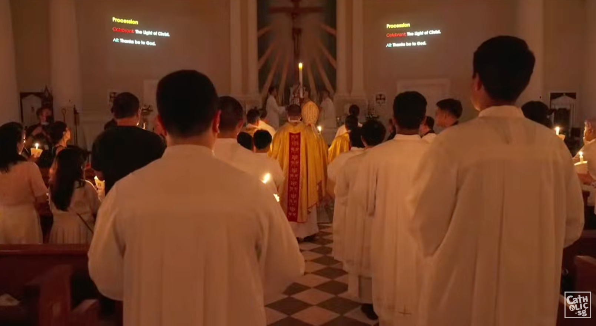
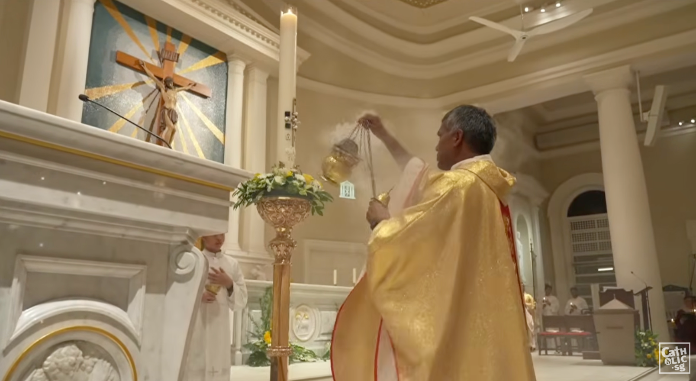

Light of God
The Easter Promise
Holy Spirit Prayer
Come, Holy Spirit, live in us
With God the Father and the Son,
And grant us your abundant grace
To sanctify and make us one.
May mind and tongue made strong in love
Your praise throughout the world proclaim,
And may that love within our hearts
Set fire to others with its flame.
Most blessèd Trinity of love,
For whom the heart of man was made,
To you be praise in timeless song,
And everlasting homage paid.
Introduction
- Ice Breaker: Do you have a character in a book, movie, or cartoon that you feared in childhood? Why?
- Media Clip: Harry Potter scene
- Evil Characters Image
Why do we fear darkness?
Because God created us in Light and leads us with light
"Since God could create everything out of nothing, he can also, through the Holy Spirit, give spiritual life to sinners by creating a pure heart in them... God 'gives life to the dead and calls into existence the things that do not exist.'"
📖 CCC 298
Stage 1: Creation
Genesis 1:1-4
"In the beginning when God created the heavens and the earth, the earth was a formless void and darkness covered the face of the deep... Then God said, 'Let there be light'; and there was light."
Discussion Question
Why did God create light first?
- There can be no life without light
- God created life out of nothing through the Holy Spirit
- The Easter candle blesses baptismal water, just as the Spirit swept over the waters
Stage 2: Exodus
Exodus 13:21
"The Lord went in front of them in a pillar of cloud by day, to lead them along the way, and in a pillar of fire by night, to give them light..."


"The candle, lit from the Easter candle, signifies that Christ has enlightened the neophyte. In him the baptized are 'the light of the world.'"
📖 CCC 1243
Stage 3: The Incarnation
Isaiah 9:2
"The people who walked in darkness have seen a great light; those who lived in a land of deep darkness—on them light has shined."
Isaiah 9:6
"For a child has been born for us, a son given to us... Wonderful Counsellor, Mighty God, Everlasting Father, Prince of Peace."
Fulfillment
Christ is the light that shines to lead us out of the oppression of sin.
Stage 4: The Resurrection
John 1:1-5
"In the beginning was the Word... What has come into being in him was life, and the life was the light of all people. The light shines in the darkness, and the darkness did not overcome it."
Victory
- Jesus is the Word who is also the light
- "The darkness did not overcome it" = death and resurrection
- Christ is the head, we are the body—we share in His life
- The light of Christ is stronger than death.
Stage 5: Parousia
Revelation 19:6-8
"Let us rejoice and celebrate and give Him the glory. For the marriage of the Lamb has come, and His bride has made herself ready. She was given clothing of fine linen, linen bright and pure."
The Wedding
- A marriage between Christ and the Church
- The Church adorned like a bride on her wedding day
- In Easter Vigil, the darkened Church is clothed in light
- We anticipate when God will be all in all
St. John Henry Newman's Journey to the Light
- As an Anglican priest, he felt strongly called to do God's work
- Traveled to Italy to study early church fathers
- In Sicily he fell sick and nearly died
- Almost unconsciously he cried out to his friends:
"I shall not die, for I have not sinned against the light."
Lead, Kindly Light
Lead, Kindly Light,
Amid the encircling gloom,
Lead Thou me on!
The night is dark, and I am far from home—
Lead Thou me on!
Keep Thou my feet; I do not ask to see
The distant scene—one step enough for me.
Reflection
What is one "darkness" in your life right now that needs a "next step" of light?
Scripture:
Genesis 1:1-4
Exodus 13:21
Isaiah 9:2
Isaiah 9:6
John 1:1-5
Revelation 19:6-8
Lead, Kindly Light:
Lead, Kindly Light,
Amid the encircling gloom,
Lead Thou me on!
The night is dark, and I am far from home—
Lead Thou me on!
Keep Thou my feet; I do not ask to see
The distant scene—one step enough for me.
Lauds Prayers and Intercessions
- Let us pray to the Father, the all-powerful God, who raised up Jesus, our prince and our Saviour.
– Glorify us, Lord, with the glory of Christ.
- Father, you brought your beloved Son from the darkness of death to the light of glory; let us enter into the regions of your own wonderful light.
– Glorify us, Lord, with the glory of Christ.
- You saved us through faith in Jesus Christ; help us to live today in the grace of our baptism.
– Glorify us, Lord, with the glory of Christ.
- You have told us to seek the things that are in heaven; enable us to resist the attraction of sin.
– Glorify us, Lord, with the glory of Christ.
- Reveal the riches of our hidden life in Christ that men may see the signs of the new heaven and the new earth.
– Glorify us, Lord, with the glory of Christ.
- (... offering our own prayer intentions)
– Glorify us, Lord, with the glory of Christ.
Our Father...
Almighty, ever-living God, bring us to the joy of your heavenly city: so that we, your little flock, may follow where Christ, our Good Shepherd, has gone before us by the power of his resurrection.
Who lives and reigns with you in the unity of the Holy Spirit, God, for ever and ever.
Amen.
The Lord bless us, and keep us from all evil, and bring us to everlasting life.
Amen.
Announcements